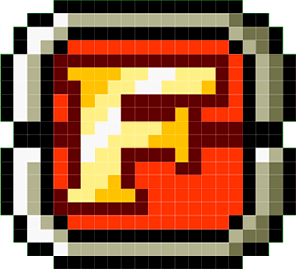

Heavy Machine Gun
Un arma con una velocidad de disparo muy rápida, sus balas son ligeramente más poderosas que las de una pistola.

Flame Shot
Un arma que dispara una gran ráfaga de llamas, puede eliminar grandes grupos con un solo disparo.
Rocket Launcher
Un arma que dispara pequeños cohetes de movimiento lento con gran poder de ataque.
Shotgun
Un arma que dispara una ráfaga de corto alcance, pero increíblemente poderosa.